Dokumentasi komprehensif implementasi fungsional, integrasi peran pengguna (Couple, Vendor, Admin), alur transaksi pemesanan langsung & penawaran khusus, serta skema arsitektur database relasional.
Aplikasi BrightDor dirancang dengan pembagian hak akses (Role-Based Access Control) yang ketat. Masing-masing tipe pengguna memiliki dashboard, alur kerja, dan kewenangan transaksi yang saling melengkapi.
Pengguna publik pencari jasa pernikahan. Bertindak sebagai pemesan paket, pengaju penawaran anggaran, dan pemberi ulasan resmi pasca-acara.
Pelaku usaha industri pernikahan (Fotografer, Venue, MUA, Catering, dll). Memiliki panel khusus berbasis Filament untuk mengelola etalase bisnis.
Superuser pengendali operasional BrightDor. Mengawasi kepatuhan transaksi, moderasi profil vendor, verifikasi pembayaran manual, dan keamanan data.
Setiap tampilan diuji langsung dari browser dalam resolusi layar penuh tanpa pengurangan proporsi, dilengkapi ulasan teknis dan bisnis fungsi fitur.
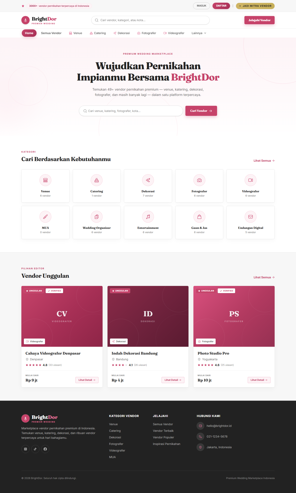
Halaman awal BrightDor dirancang sebagai pintu gerbang inspirasi pernikahan digital. Calon pengantin dapat langsung melakukan pencarian berbasis nama vendor, kategori, atau domisili kota melalui kotak pencarian pintar di header atas. Bagian beranda juga menyoroti kategori layanan terpopuler, vendor unggulan terverifikasi, dan jaminan keamanan transaksi.
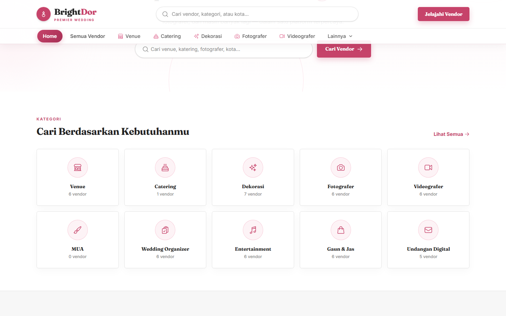
Ketika halaman di-scroll ke bawah melewati ambang batas 48 piksel, bilah promosi teratas disembunyikan secara halus untuk memaksimalkan area pandang pengguna. Header bertransformasi menggunakan efek glassmorphism (backdrop-filter blur 24px dan saturasi 200%) dengan lapisan latar belakang putih 85% soliditas, memastikan elemen teks di belakangnya tidak bocor/tumpang-tindih.
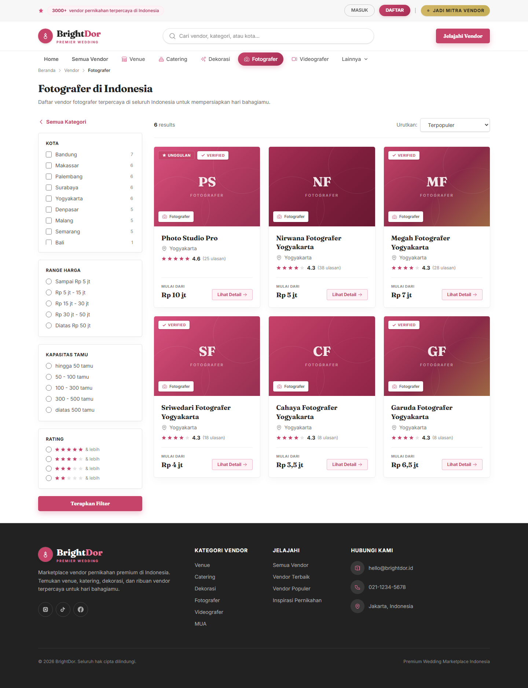
Halaman listing menampilkan etalase vendor pada kategori terpilih dengan susunan kartu grid yang informatif. Setiap kartu memuat cover karya portofolio asli (bukan lagi placeholder inisial nama), nama vendor, rating bintang rata-rata, jumlah ulasan, kota domisili, badge status verifikasi, dan estimasi harga termurah.
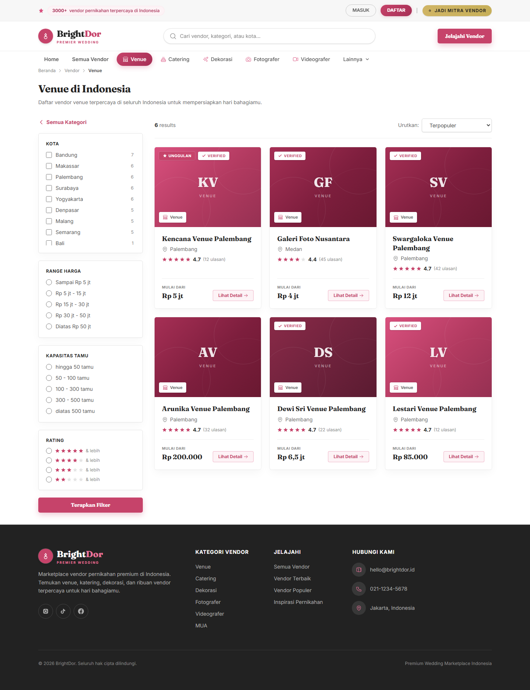
Kategori Venue mengorganisir opsi gedung, ballroom hotel, hingga lokasi outdoor. Informasi kapasitas tamu dan unit harga disajikan secara transparan guna membantu pasangan menentukan lokasi resepsi yang tepat sebelum menghubungi vendor bersangkutan.
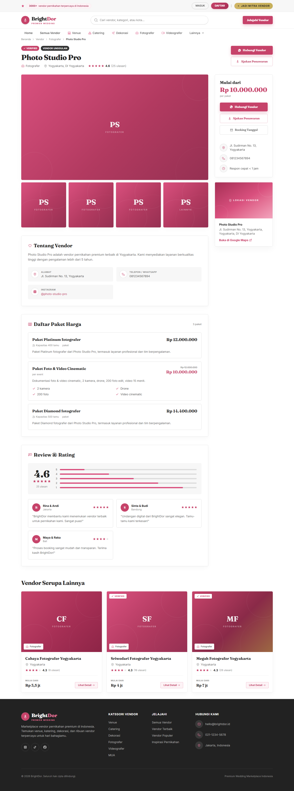
Halaman profil lengkap vendor (contoh: Photo Studio Pro) yang menyajikan galeri visual portofolio beresolusi tinggi, narasi tentang studio, alamat workshop terhubung Google Maps, daftar rincian paket layanan (fitur, durasi pemotretan, kapasitas tamu), breakdown bintang rating, dan ulasan asli dari pengguna sebelumnya.
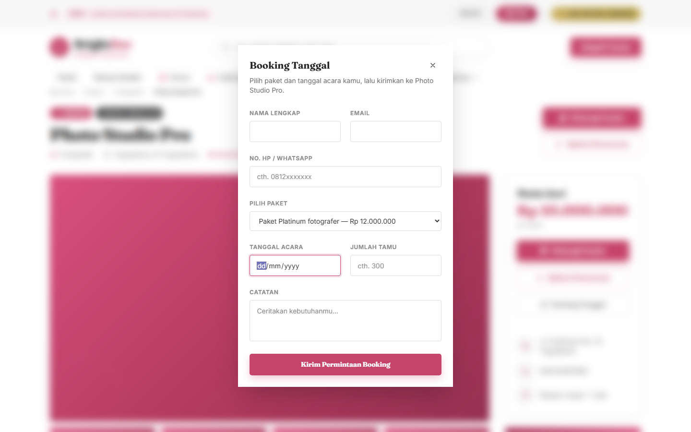
Formulir modal interaktif untuk memesan paket pernikahan secara pasti. Modal ini tampil di atas seluruh elemen halaman (z-index level 200, di atas sticky navbar) dengan latar belakang gelap transparan (backdrop blur). Calon pengantin memilih paket layanan yang tersedia, menginput tanggal pelaksanaan acara (dengan validasi tidak boleh tanggal lampau), perkiraan jumlah tamu undangan, data kontak lengkap, dan catatan khusus. Begitu dikirimkan, kode booking unik otomatis diterbitkan ke database dengan status pending.
services.
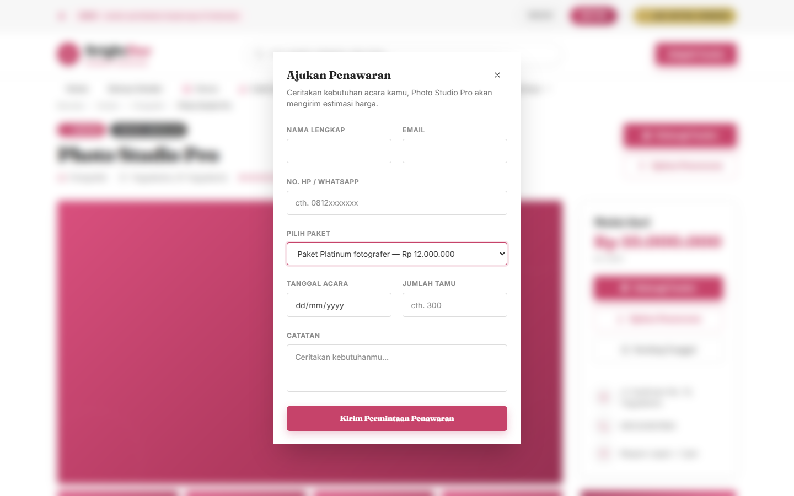
Solusi bagi calon pengantin yang membutuhkan penyesuaian paket di luar paket standar (misal: penambahan jam kerja dokumentasi, pengurangan jumlah photobook, atau penyesuaian plafon budget). Form mengarahkan pengguna untuk menceritakan spesifikasi kebutuhan acara agar vendor dapat mengkaji dan mengajukan estimasi harga penawaran khusus.
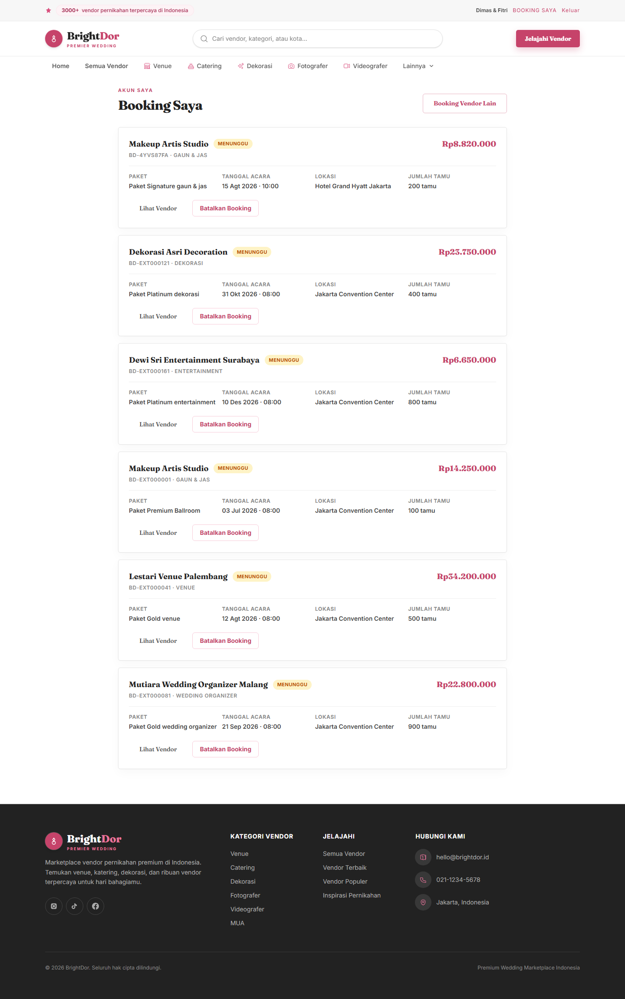
Setelah masuk dengan akun Couple (contoh: couple.ext1@brightdor.test), calon pengantin memiliki dashboard mandiri untuk memantau semua reservasi yang pernah diajukan. Status transparan mulai dari Pending (menunggu konfirmasi vendor), Confirmed (disetujui), On Progress, hingga Completed. Pasangan juga dapat membatalkan pesanan jika masih berstatus pending.
user_id auth.
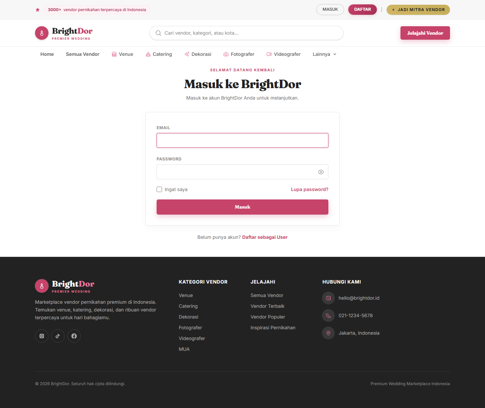
Formulir login bersih yang mendukung autentikasi akun publik. Masalah sebelumnya di mana browser password manager menghasilkan teks putih di atas latar belakang putih saat melakukan autofill telah diperbaiki secara tuntas melalui CSS override tingkat tinggi (-webkit-box-shadow inset #ffffff !important dan -webkit-text-fill-color: #222222 !important), sehingga teks isian tetap terbaca tajam dan nyaman.
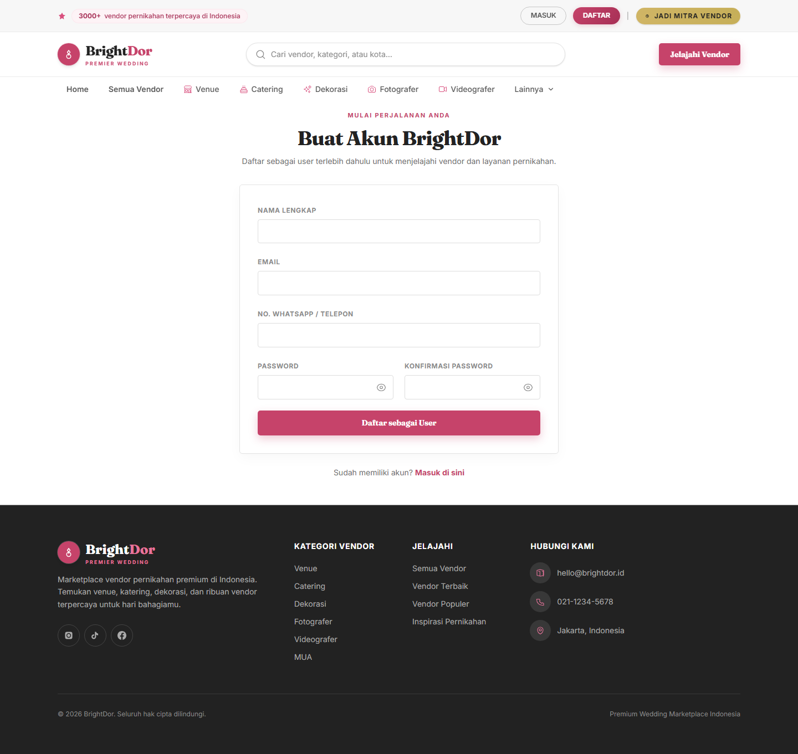
Alur pendaftaran yang ringkas memudahkan pengguna bergabung ke BrightDor hanya dengan menyertakan nama lengkap, alamat email aktif, dan kata sandi yang terenkripsi. Pengguna yang terdaftar langsung mendapatkan peran couple dan diarahkan langsung ke katalog vendor untuk memulai perencanaan pernikahan.
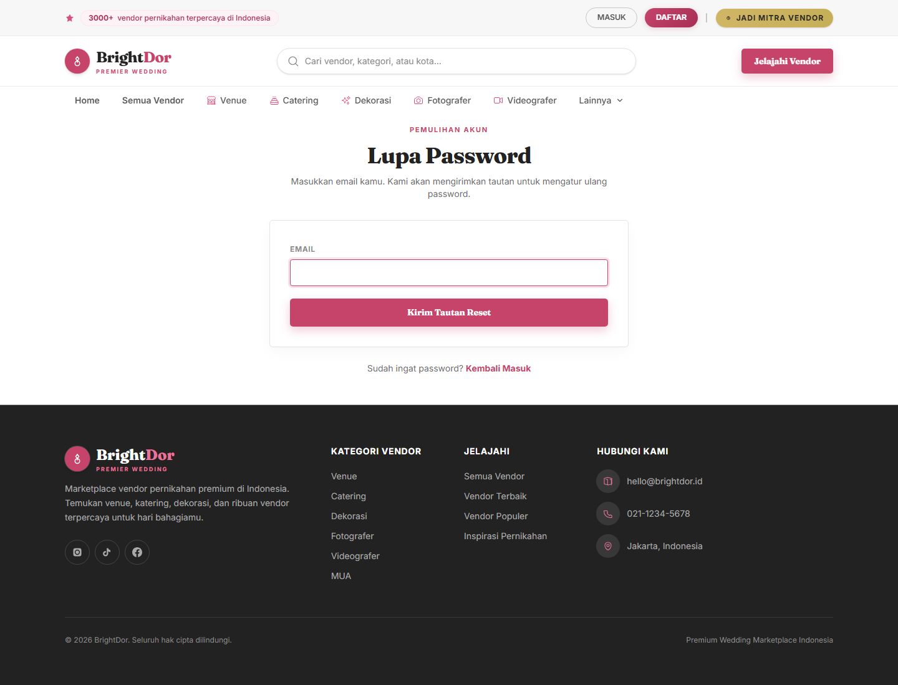
Sesuai prinsip keamanan modern dan arahan presentasi: Admin tidak boleh mengubah password pengguna secara manual untuk menghindari celah social engineering dan pelanggaran privasi. Halaman /lupa-password menyediakan mekanisme token terenkripsi yang dikirimkan langsung ke email pemilik akun asli dengan batas kadaluarsa otomatis.
Pusat pengelolaan terpadu yang dirancang untuk menangani beban operasional tinggi dengan otomatisasi cerdas, validasi pembayaran terintegrasi, dan keamanan berlapis.
Transaksi dari gateway pembayaran (Midtrans/Xendit) tervalidasi otomatis melalui webhook callback server-to-server. Namun untuk pembayaran transfer manual, admin memiliki antarmuka khusus untuk mencocokkan bukti mutasi rekening secara cepat sebelum mengubah status menjadi lunas.
Ketika data bisnis bertumbuh dengan puluhan menu (Users, Vendors, Services, Bookings, Transactions, Testimonials, Settings), arsitektur Filament mengelompokkannya ke dalam klaster navigasi (Master, Marketplace, Keuangan, Konten) lengkap dengan fitur pencarian global (Ctrl+K) agar admin tidak kewalahan.
Komputasi komisi platform (contoh: 10% default), akumulasi rating vendor saat review baru masuk, pembaruan agregasi ulasan, dan pergantian status langganan vendor (subscription active vs expired) dieksekusi secara otomatis oleh background event listener tanpa memerlukan intervensi manual admin.
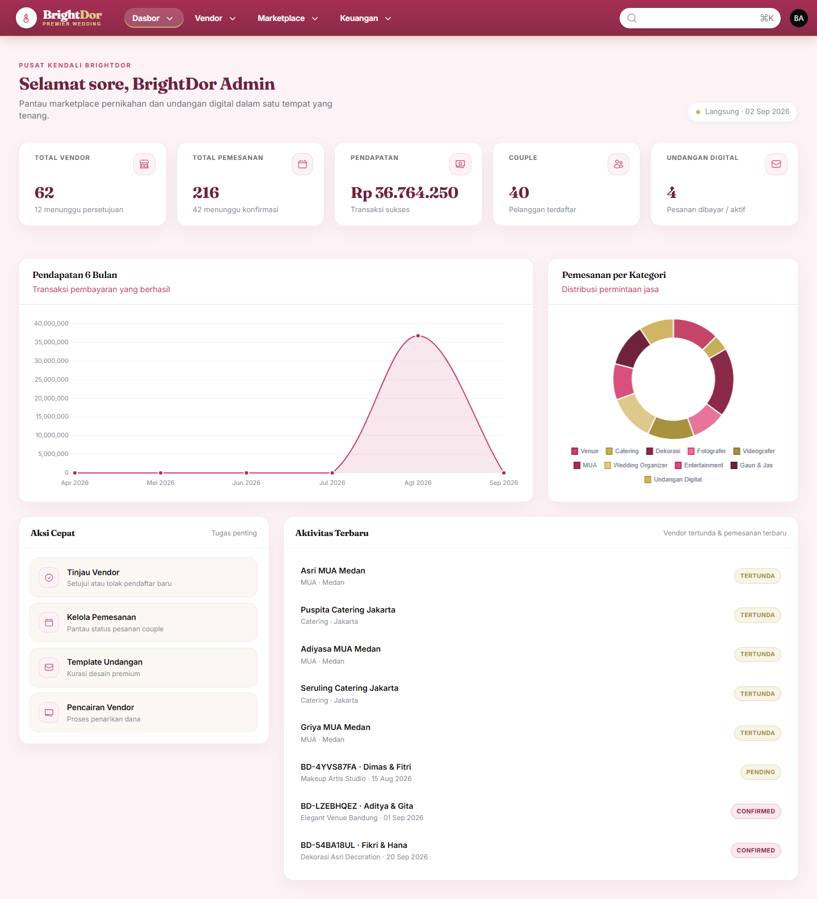
Tampilan utama panel admin yang menghadirkan ringkasan metrik kesehatan bisnis: total pendapatan kotor, estimasi komisi bersih platform, jumlah pesanan aktif, total pengguna terdaftar, serta grafik tren transaksi harian. Tema visual dashboard telah diselaraskan penuh dengan palet warna BrightDor (maroon, rose, dan aksen emas).
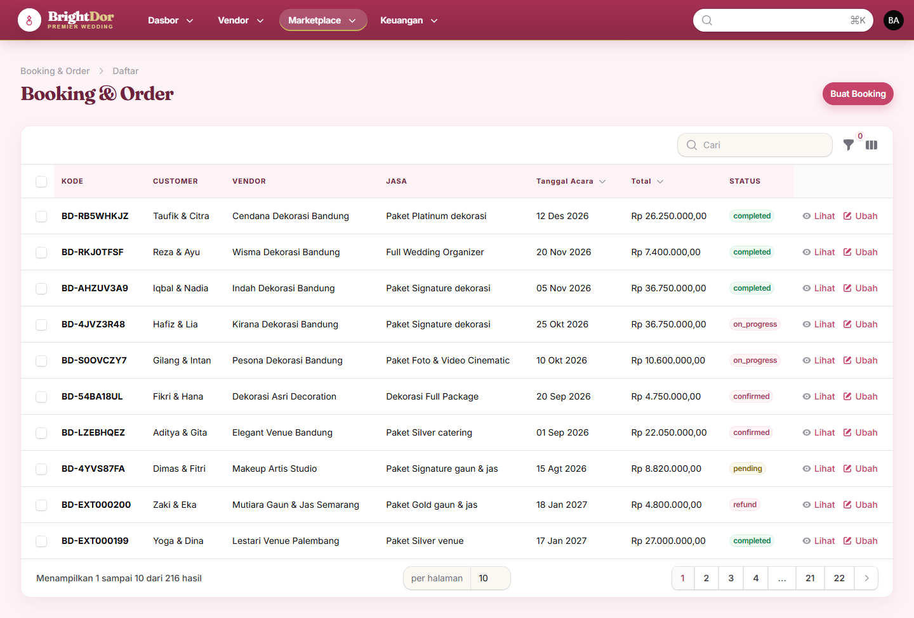
Admin dapat meninjau seluruh transaksi antar couple dan vendor. Filter cerdas memungkinkan pengelompokan berdasarkan status (Pending, Confirmed, On Progress, Completed, Cancelled). Dilengkapi tombol aksi cepat untuk melihat rincian pemesan, tanggal acara, serta verifikasi kelayakan status pencairan dana.
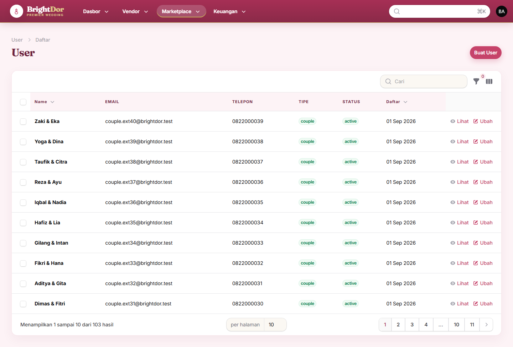
Modul pengawasan akun pengguna yang mencakup peran Couple, Vendor, dan Admin. Admin dapat menonaktifkan akun yang melanggar ketentuan, memeriksa status langganan mitra (Active / Expired), serta melihat tanggal terakhir login tanpa memiliki akses terhadap password plaintext user.
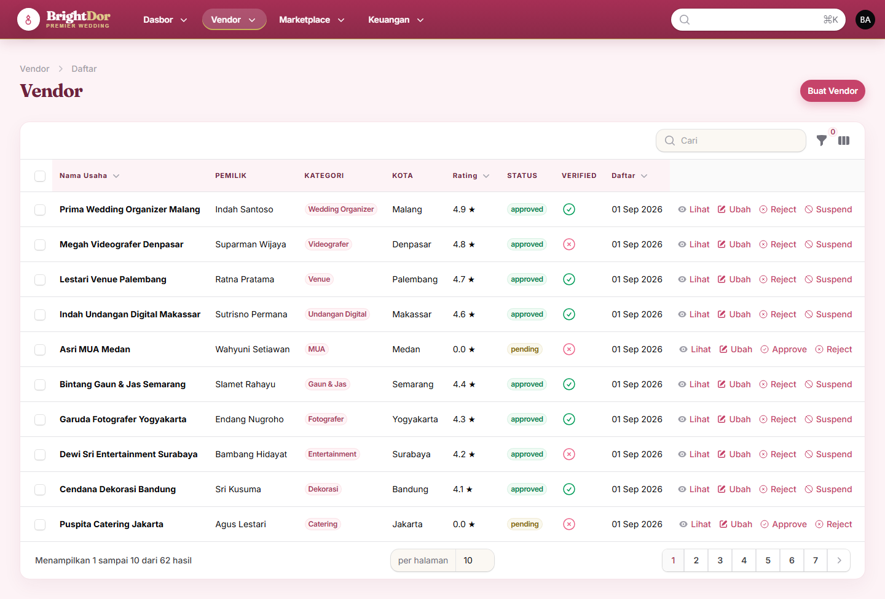
Daftar seluruh profil bisnis mitra pernikahan. Admin bertugas memverifikasi kelayakan legalitas dokumen (KTP, NIB, portofolio) sebelum memberikan badge Verified, serta menentukan mitra dengan performa tinggi untuk disematkan sebagai Vendor Unggulan di halaman depan aplikasi.
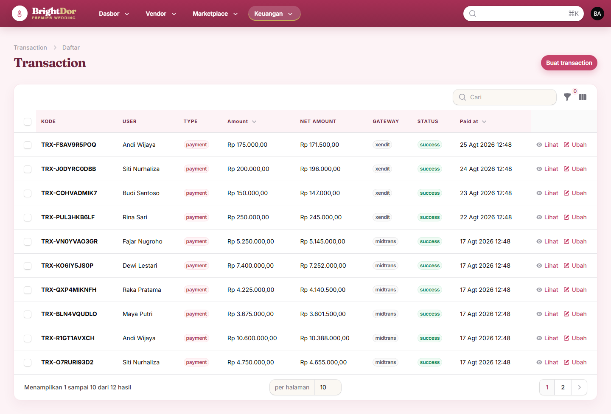
Tabel transaksi mencatat semua aliran dana masuk dan keluar (pembayaran booking pernikahan maupun pesanan undangan digital) melalui relasi polimorfik payable. Admin dapat memvalidasi metode pembayaran yang digunakan (Midtrans, Xendit, Manual), memeriksa kode unik transaksi, dan mengeksekusi pencairan dana (payout) ke rekening bank vendor mitra.
Antarmuka mandiri khusus vendor untuk memantau performa usaha, mengelola etalase paket layanan, dan memproses setiap booking yang diajukan oleh calon pengantin.
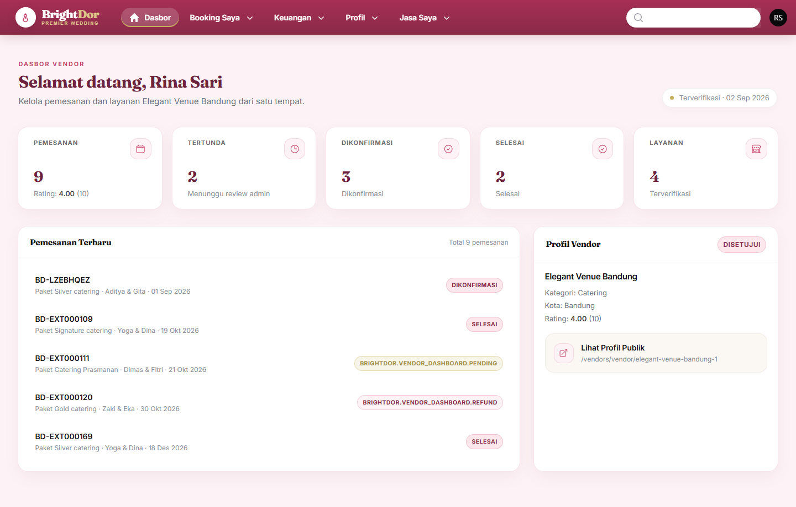
Vendor (contoh akun mitra rina@elegantvenue.id) memiliki akses terisolasi untuk melihat statistik performa bisnisnya sendiri: jumlah pesanan baru masuk, estimasi saldo pendapatan yang siap dicairkan, ulasan rating yang diberikan pasangan pengantin, serta pintasan cepat untuk menambah paket layanan baru atau memperbarui foto portofolio.
Prinsip arsitektur teknis BrightDor mengedepankan efisiensi biaya infrastruktur pada tahap awal (tidak boros resource) sembari mempertahankan standar keamanan data enterprise yang kokoh.
Semua password pengguna di-hash satu arah menggunakan algoritma Bcrypt (work factor 12) dengan salt dinamis. Teks asli kata sandi tidak pernah disimpan dan bahkan admin superuser tidak memiliki kemampuan untuk membacanya.
Sesuai standar operasional: Admin tidak mengubah password user. Pengguna yang lupa kredensial mereset sendiri via email token berbatas waktu untuk mencegah penipuan manipulasi identitas (social engineering).
Setiap aksi krusial sistem (persetujuan dokumen vendor, perubahan nominal harga paket, transaksi pembayaran, pencairan saldo payout) dicatat ke tabel audit_logs lengkap dengan metadata IP address, user-agent, nilai lama, dan nilai baru.
Laravel menyisipkan verifikasi CSRF token di setiap request formulir guna menangkal pemalsuan permintaan antar-situs, serta menerapkan context-aware HTML escaping otomatis pada Blade template engine untuk membendung injeksi skrip XSS.
Sesuai arahan: "Ketika hosting databasenya tidak sampai banyak dan sesuai standar dan kebutuhannya". Database MySQL dikonfigurasi dengan indexing tepat dan normalisasi relasional terukur sehingga berjalan ringan tanpa membebani biaya server pada tahap awal rilis.
Sesuai arahan: "Ketika domain lemah harus di-upgrade kembali". Arsitektur aplikasi decoupling (stateless web + media symlink terpisah) siap dipindahkan secara mulus dari shared hosting awal ke VPS performa tinggi atau cloud container (DigitalOcean/AWS) saat lonjakan trafik pengguna terjadi.
Skema database aktual hasil migrasi BrightDor (September 2026). Diagram disajikan dalam resolusi ultra-tinggi 3200 × 2200 piksel dengan tipografi tajam, tabel diperbesar, serta penjabaran kolom dan relasi lengkap agar mudah diuji dan dipresentasikan di hadapan dosen/penguji.
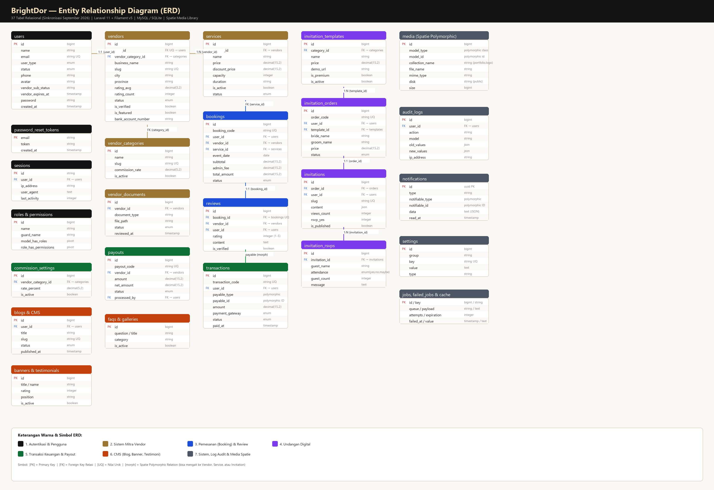
Rincian struktur kolom kunci, tipe data, dan aturan keterkaitan antar tabel untuk menjawab pertanyaan teknis dosen.
Pondasi keamanan akses untuk memisahkan hak login admin, mitra vendor, dan calon pengantin (couple).
id, email (unique), password (bcrypt hash), user_type (admin/vendor/couple), status, field langganan vendor (vendor_subscription_status, vendor_subscription_expires_at).email, token acak SHA-256 untuk reset mandiri.Entitas profil bisnis penyedia jasa pernikahan, katalog kategori, paket harga, dan berkas verifikasi resmi.
id, FK user_id (unique 1:1), FK vendor_category_id, business_name, slug, city, rating_avg, status (pending/approved/rejected), is_verified.id, FK vendor_id (1:N), name, price, discount_price, capacity, duration, features (JSON).id, FK vendor_id, dokumen KTP/NIB/sertifikasi untuk ditelaah admin.
Inti transaksi operasional jasa pernikahan antara calon pengantin dengan vendor terpilih.
id, booking_code (unik cth. BD-XXXXX), FK user_id → users, FK vendor_id → vendors, FK service_id → services, event_date, guest_count, total_amount, status (pending/confirmed/on_progress/completed/cancelled).id, FK booking_id (unique per booking), FK vendor_id, FK user_id, rating (1-5), content. Otomatis memicu kalkulasi ulang rating_avg pada vendor.
Fitur add-on penciptaan undangan pernikahan berbasis web dengan domain khusus dan sistem RSVP kehadiran tamu.
id, FK invitation_order_id, slug, subdomain, content (JSON susunan acara, galeri, musik), counter views_count, rsvp_yes/no/maybe.id, FK invitation_id, guest_name, attendance, guest_count, message ucapan selamat.
Pencatatan mutasi pembayaran serbaguna dan mekanisme pencairan penghasilan vendor.
id, transaction_code, FK user_id, payable_type & payable_id (polimorfik ke Booking atau InvitationOrder), amount, payment_gateway (Midtrans/Xendit/Manual), status (pending/success/failed).id, payout_code, FK vendor_id, amount, net_amount, status pencairan, FK processed_by → users (admin pemroses).
Pengelolaan materi informasi publik beranda untuk membangun kepercayaan dan panduan calon pengantin.
user_id penulis, title, slug, content, status).Penyimpanan aset media polimorfik, audit forensik keamanan, notifikasi sistem, dan queue engine.
model_type, model_id, collection_name: logo, portfolio, documents, cover). Mendukung konversi thumbnail otomatis.user_id, action, model, old_values & new_values (JSON snapshot data sebelum vs sesudah perubahan), ip_address forensik.